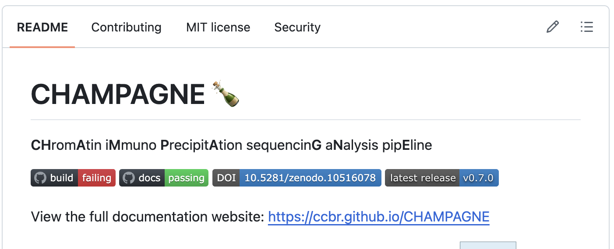
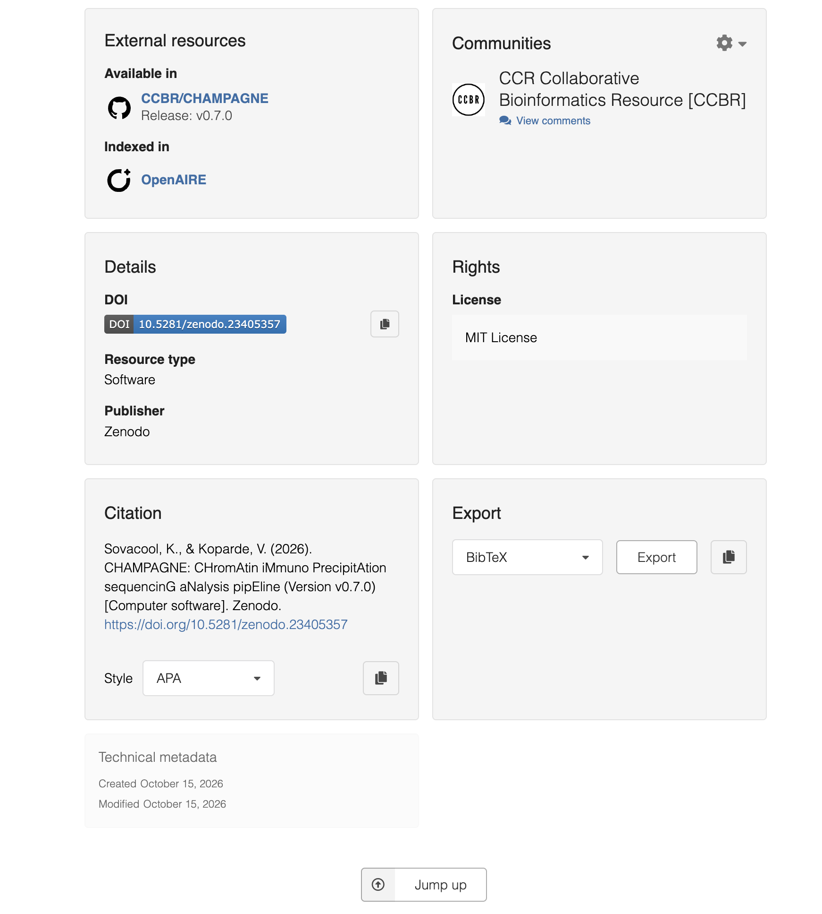

How to Cite CCBR Software in Scientific Publications
If your analysis uses a CCBR pipeline, tool, or analysis repository, cite it in your manuscript. In the Methods section, name the software and give the exact version you used. In the References section, include its full citation and DOI.
How to write the manuscript
- In Methods, name each CCBR software, give the exact version you used, and add a citation marker that points to its References entry.
- In References, include the authors, year, title, version, archive or repository URL, and DOI.
- Cite the software separately from papers describing its scientific methods and from third-party tools.
- If you publish analysis code in a separate repository, cite it separately.
The version in Methods must match the version in the reference. Use the DOI for that specific release when one is available. If you do not know the version, first try to find it in your run logs or other analysis records. If you cannot, use the all-versions DOI and state that the version is unknown. Before submitting, check the title, author list, version, and DOI against the software’s archive record.
Example
For example, in the Methods section:
Bulk RNA-seq data were processed with RENEE v2.7.7 (1), and differential expression analysis was performed with MOSuite v0.5.0 (2) using limma and voom (3, 4). The analysis code is available in a GitHub repository archived in Zenodo (5).
The corresponding references might look like this:
- Sevilla, S., Sovacool, K., Kuhn, S., Tandon, M., & Koparde, V. (2026). RENEE: Rna sEquencing aNalysis pipElinE (Version v2.7.7) [Computer software]. Zenodo. https://doi.org/10.5281/zenodo.21074664
- Sovacool, K., Homan, P., Koparde, V., & Chill, S. (2026). MOSuite: R package for differential multi-omics analysis (Version v0.5.0) [Computer software]. Zenodo. https://doi.org/10.5281/zenodo.22262260
- Add the appropriate reference for limma.
- Add the appropriate reference for voom.
- Nathan, W. (2026). CCBR/hTLX3_mutIL7R_leukemia_Rodrigues 1.0.0 (Version v1.0.0) [Computer software]. Zenodo. https://doi.org/10.5281/zenodo.24093943
These example references are numbered 1-5, but in a real manuscript they will usually have different numbers. We recommend using a reference manager instead of numbering and formatting references by hand.
Find the software citation
Get the citation metadata to import into your reference manager. Use whichever source is available for the software:
Zenodo record
Follow the DOI badge from the GitHub repository to its Zenodo record.

At the bottom of the record, select Export and choose BibTeX or another format supported by your reference manager. The Zenodo guide explains how CCBR repositories are archived there.

Include the DOI in the reference as a link, such as https://doi.org/10.5281/zenodo.21074664, or in the format doi:10.5281/zenodo.21074664. Use the DOI for the exact release you used; a project page or GitHub URL is not a substitute when a release DOI is available.
Command-line citation option
Some CCBR pipelines and tools provide a --citation option or a cite command. Run it as documented by the software. For example:
champagne --citation@misc{YourReferenceHere,
author = {Sovacool, Kelly and Koparde, Vishal},
doi = {10.5281/zenodo.10516078},
month = {10},
title = {CHAMPAGNE: CHromAtin iMmuno PrecipitAtion sequencinG aNalysis pipEline},
url = {https://ccbr.github.io/CHAMPAGNE/},
year = {2026}
}The command exports BibTeX. Save the output to a .bib file and import it into your reference manager. This example does not include a version, so check the archive record and report the exact version you used in Methods. Also check whether the DOI identifies that specific release or all versions.
Cite an analysis repository
If you wrote analysis code for the manuscript, publish it in a separate GitHub repository and cite it as a separate software reference. See reference 5 above for an example.
If the analysis repository does not yet have a DOI, or you are unsure how to cite it, contact Kelly before submitting the manuscript.
Reference management software
Use reference management software, such as Zotero, to organize your references and format your bibliography. Zotero is open source, works with MS Word, and exports bibliographies for LaTeX and Quarto. See the Zotero documentation for more information.
If you are not the first author, changes are someone else is responsible for preparing the references and formatting the manuscript. Send them the verified citation information for all CCBR software used. Before submission, check that each software citation includes the correct version and DOI, as described in How to write the manuscript. Do not approve a manuscript for submission until the software citations are included correctly with DOIs.
Getting help
Contact Kelly (kelly.sovacool@nih.gov) with questions or if you run into problems.
Learning more
For more information on why software citation matters, read the FORCE11 Software Citation Principles.